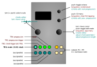

Acid Curds

Inputs and outputs
| I/O | Function | - |
|---|---|---|
| TR1 | main clock / S+H input | - |
| TR2 | chord advance trigger (if selected via chords trg src) |
- |
| TR3 | playmode trigger TR3+1 - TR3+3, CV-address trigger (S+H#1 - S+H#4) |
- |
| TR4 | progression reset | - |
| CV1 | (mappable) | - |
| CV2 | (mappable) | - |
| CV3 | (mappable) | - |
| CV4 | (mappable) | - |
| A, B, C, D | chord outputs | A is the base note |
Available settings
| Setting | Meaning |
|---|---|
--> scale |
edit current scale |
root |
scale root |
progression |
select progression #1 - #4 |
chords --> |
edit progression/chords |
playmode |
chain sequences (SEQ+x), advance by TR3 (TR3+x), or CV-address |
direction |
forward, reverse, pendulum1, pendulum2 (repeat first/last), random, brownian |
transpose |
transpose (in scale-degrees) |
octave |
transpose in octaves |
CV source |
CV source (CV1, CV2, CV3 or CV4 |
chords trg src |
chords-trigger: TR1 or TR2 |
TR1 delay |
TR1 trigger-to-processing latency - see the discussion of the Trigger delay setting in the quantermain app for more details |
Controls
main menu
| Control | Function |
|---|---|
| Left encoder (turn) | select scale |
| Left encoder (press) | activate scale |
| Left encoder (long press) | - |
| Right encoder (turn) | Navigation mode: move up and down through the menu items. Edit mode: increase or decrease the value being edited |
| Right encoder (press) | Toggle between menu navigation (selection) mode and value editing mode |
| Right encoder (long press) | app selection menu |
| Up button | toggle up/down by one octave |
| Down button | go to CV menu |
| Up button (long press) | screensaver |
| Down button (long press) | clear CV mapping |
CV menu
- enter the CV menu by holding down the down button.
- use the right encoder to assign CV input channels 1-4 to a channel parameter (currently available parameters are:
root(scale/global),scale mask,transpose,octave,voicing,inversion,progression #,direction, andprogression length. - return to the main menu by either pressing the up or down buttons.
- clear all mappings (per channel) by long-pressing the down button.
- use the right encoder to assign CV input channels 1-4 to a channel parameter (currently available parameters are:
chords editor
| Control | Function |
|---|---|
| Left encoder (turn) | select chord-step, or select chord-feature |
| Left encoder (press) | toggle step-select / feature-select |
| Right encoder (turn) | 1) adjust chord feature; 2) adjust progression length by pointing the cursor to the far right, then turn |
| Right encoder (press) | exit editor |
| Up button | go to next progression (edit ‘offline’) |
| Down button | go to previous progression (edit ‘offline’) |
| Left encoder (long press) | - |
| Down button long press | - |
| Right encoder (long press) | – (app selection menu) |
| Up button long press | – (screensaver) |
Summary
Acid Curds is a basic chord sequencer. The app provides four 8-step chord progressions (in total), and CV-control over various parameters, including chord type, progression length, direction, voicing, inversion, etc. The four chord progressions can be chained in various ways, providing progressions from 1 to up to 32 chords. The chords/sequence data is stored along with the other settings (whenever settings are saved).
- Acid Curds can be used as either a basic quantizer / sample-and-hold type thing, in which case the chords will be formed on the basis of the incoming root CV, or it can be used as a step-sequencer, in which case the chord base-notes and chord properties will be fixed notes (chosen from a given scale) respectively features (inversion, voicing, etc); it’s also possible to combine sequencer and S+H type behaviors. Here is the basic i/o mapping; the CV inputs are freely assignable:
- the chords editor works much like the scale and sequence editors in Copiermaschine, Sequins, etc:
- in the main menu, select which progression (#1-#4) to edit by adjusting the
progressionparameter. - then right-click on the item
chords -->to open the chords-editor:- adjust the progression length by pointing the cursor to the far right (using the left encoder), then turn the right encoder.
- turn the right encoder to change the selected chord-parameter (highlighted w/ white background).
- turn the left encoder to either select which chord (step) to edit, or to select which step-feature to edit.
- pushing the left encoder toggles between chord-select and feature-select.
- push the right encoder to close the editor again.
- in the main menu, select which progression (#1-#4) to edit by adjusting the
- a chord (or step) consists of five features: quality/type (
Q), voicing (V), inversion (I), base note (B), and the register/octave (O). most of the parameter values should be fairly self-explanatory. -
the ‘base note’ (or root note) of a chord can be set to either
CV, in which case a chord will be formed based on the voltage present at input CV1 (TR1 in that case is used as the S+H clock, the chords progression will advance depending on thechords trg srcsetting); or, it can be set to a fixed value:#1,#2,#3, etc (these values are given in scale degrees, e.g. choosing#3= the third note of a given scale). -
the
playmodeanddirectionsettings offer various ways of moving through the sequence(s):-(default): advance by trigger, using the chosen direction settings.SEQ+1 - SEQ+3: ditto, but cycling through 2, 3, or 4 adjacent progressions (= chain up to 32 chords).TR3+1 - TR3+3: ditto, but jumps to the next progression only if/when a trigger is received at the TR3 trigger inputs.S+H#1 - S+H#4: CV-address, triggered by TR3 (= sample and hold).CV#1 - CV#4: CV-address, free-running.
Tips
- usually what trips people up is that by default there’s two clocks involved:
- TR1 = S+H
- TR2 = “chord trigger”
- a pulse into TR1 will make the module sample the CV inputs (which won’t do anything if you choose a static ‘base’ note)
- a pulse into TR2 will actually step to the next chord in the progression (if any)
- you can map both types of behaviour to TR1, see the
chords trg srcparameter above